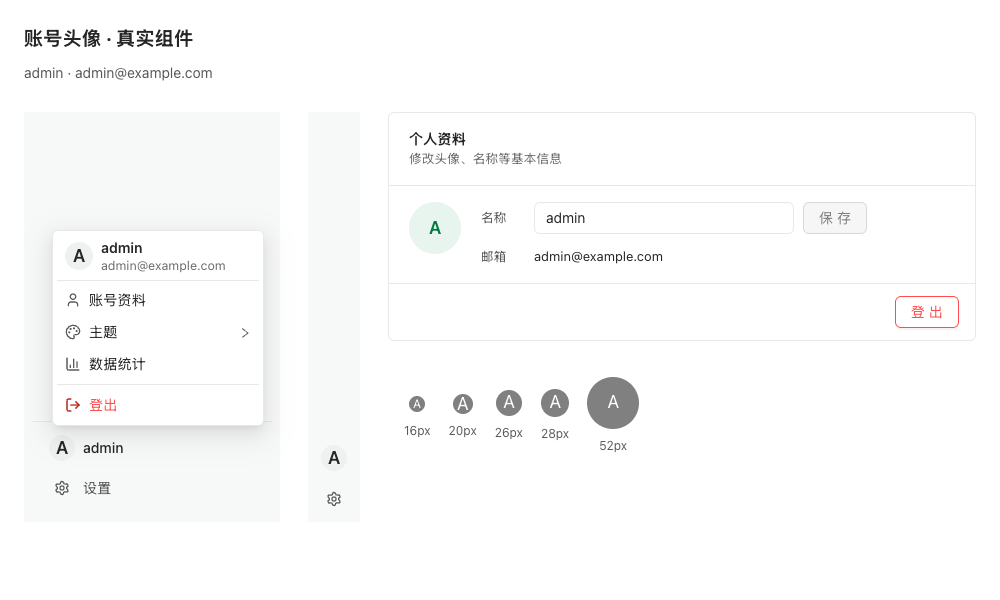
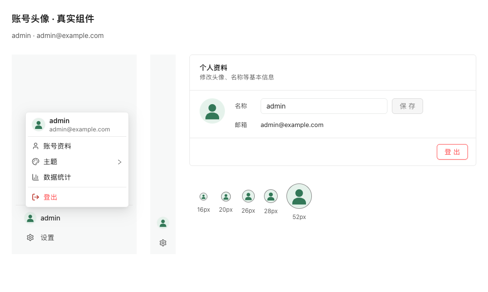

之前

打开真实组件HTML · 打开PNG之后

打开真实组件HTML · 打开PNG侧栏、折叠入口、账号菜单和资料设置保持相同尺寸、内容与主题。默认头像与姓名无关；自定义头像和上传预览优先。覆盖、验证与小程序基线说明

打开真实组件HTML · 打开PNG
打开真实组件HTML · 打开PNG小程序以当前HEAD c06f843的48px View资料卡为基线，只替换字母回退。早期并行工作树/32px独立方案保存在历史目录。DOM适配仅核对真实源码与本地图片，微信设备验收仍待验。